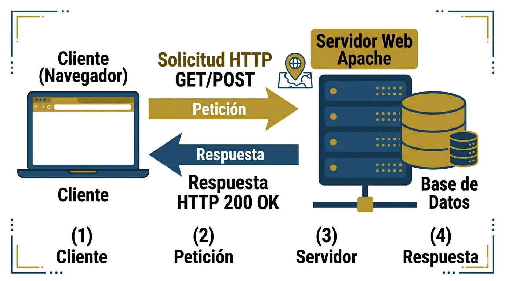

Paso 3: Procesamiento en el Servidor Web
El servidor web (p. ej. Apache en XAMPP) recibe la solicitud HTTP y determina que recurso devolver.

Como funciona el servidor?
- Recibe la peticion HTTP del navegador.
- Interpreta la ruta solicitada (p. ej. /index.html).
- Busca el recurso en el sistema de archivos o en la base de datos.
- Ejecuta scripts del lado del servidor si es necesario.
- Construye la respuesta HTTP con codigo de estado y cuerpo.
Ejemplo de respuesta HTTP del servidor
HTTP/1.1 200 OK
Date: Mon, 26 May 2026 18:00:00 GMT
Server: Apache/2.4.57
Content-Type: text/html; charset=UTF-8
Content-Length: 2456Diferencias: Cliente vs. Servidor
| Aspecto | Lado del Cliente | Lado del Servidor |
|---|---|---|
| Lenguajes | HTML, CSS, JavaScript | PHP, Python, Node.js |
| Ejecucion | En el navegador del usuario | En el servidor web |
| Acceso a datos | Solo datos del navegador | Bases de datos, archivos |
| Seguridad | Codigo visible por el usuario | Codigo oculto al usuario |